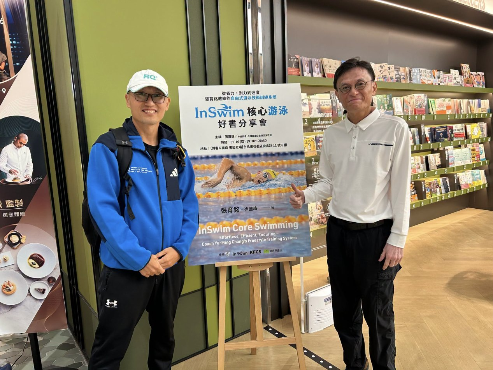
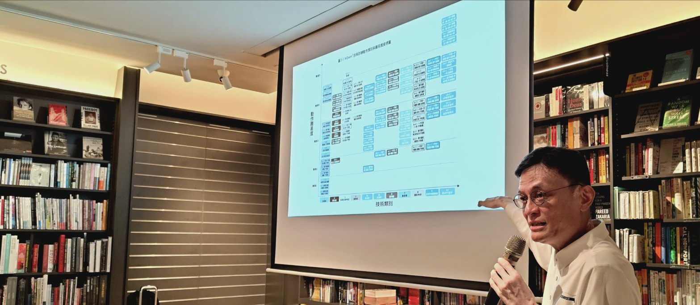

與張育銘教練出書的緣分｜《InSwim核心游泳》最重要的一張圖
很久以前，就知道張育銘教練很厲害，大約是在 2009 年就知道了，當時是東華大學的鐵人三項隊教練 Ben 帶我們去給張教練指導。
2014 年，還曾請志祥每週去找張教練吃早餐，訪問後想寫成專欄來造福鐵人們。
2020 年，在東華大學連續多日見識到張教練對基礎技術的重視與練法，起心動念：「張教練的方法應該要整理出來，最好能出成一本書。」但當時我還沒有能力幫人家出書。
直到 2024 年暑假，在太昌國小泳池偶遇正在訓練選手的張教練（國風國中泳池整修，所以張教練帶隊到這裡移地訓練），那時我多了一個身分：KFCS 訓練書系主編，工作之一就是找書、找作者，所以第一個念頭就是找張教練出書，把他三十多年的經驗與智慧的結晶系統性地整理出來。
我開口問了，沒想到張教練過幾天就同意了！
這讓我十分開心，馬上約張教練到臺北的出版社辦公室詳談，相談甚歡，張教練也很相信我和出版社，所以出書計畫立即啟動！
過了兩年，《InSwim核心游泳》這本書完成了！
雖然辛苦，但做得很愉快！
合作順利，也學到好多，我應該是第一位受益於這本書的讀者了！

（與張育銘教練在臺北場新書分享會前合照，博客來書店）
書中最重要的一張圖：10 類技術動作座標圖（圖 2-1，第 59 頁）。

（張育銘教練分享 InSwim 中 10 類動作的座標圖，這在書中的第 59 頁。）
► X 軸是動作類別，由 1 → 10，數字愈大，動作的複雜度、平衡與控制需求愈高。
► Y 軸是動作難度，由 1 → 5，數字愈大，動作的難度愈高。
數字愈接近 1，愈接近基礎技術；
數字愈高，動作愈難，或對平衡的要求與複雜度愈高。
所以，當某個分解技術做不好時，就要倒階（退回數字較小的動作）。我的理解是：在練技術時可以不用做到完美，因為任何一個分解技術都無法做到完美，只要有改善、有變好，就是進步。進步後就可以試數字更高的動作，若練了一陣子都沒有進步，就應倒階做簡單一點的動作。
希望喜歡游泳和鐵人三項的人都能從本書中受益！